Processing RDF Graphs in a parallel and continuous way
By Usman Younas and Sander Breukink
Contents
- Motivation
- Basic definitions
- Used technologies
- Our work
- Benchmarks
- Questions
Motivation
- Increasingly more RDF data
- Analyzing it becomes more difficult
- Querying in realtime
Basic definitions
RDF triples
RDF: Resource Description FrameworkStreams
- Triples come one by one
- Analyze during the stream
Bloom filters


Used technologies
Apache storm

Apache storm
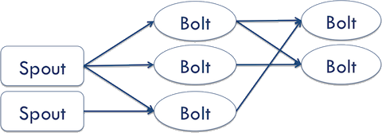- Spout
- Bolt
- Topology
Apache Jena api
- API for handling RDF graphs
- Create and read RDF graphs
- Can use multiple input files
Apache Maven

- Build automation
- Describes how software is built
- Describes the dependencies
Grid5000
- Free to use for research purposes
- Book slots to run benchmark tests
- 1.000 nodes with 8.000 CPU cores

Our work
Used terminologies
- Spout
- Bolt builder
- Bolt prober
- BuilderProber Bolt
Testing data

- 3 different predicates
- Automated data maps
- Useful for quick and easy testing
Query Decomposition

- 1-Variable Join
- 2-Variable Join
- Multi-Variable Join
1-Variable Join
1-Variable Join
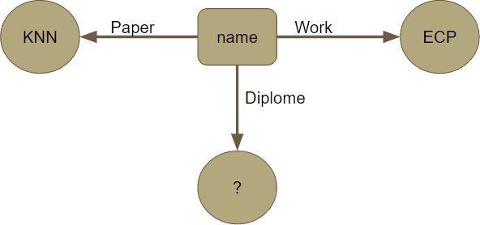
SELECT author WHERE
Paper = kNN AND
Work = INRIA AND
diplome = Ph.D
Paper = kNN AND
Work = INRIA AND
diplome = Ph.D
2-Variable Join
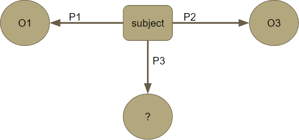2-Variable Join

SELECT author, diplome WHERE
Paper = kNN AND
Work = ECP
Paper = kNN AND
Work = ECP
Multi-Variable Join

Multi-Variable Join

SELECT author, work, diplome WHERE
Paper = kNN
Paper = kNN
1-Variable Join Topology
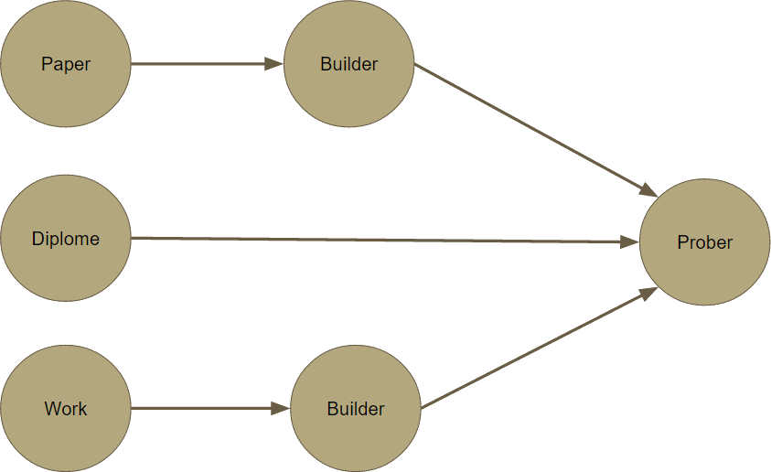
SELECT author WHERE
Paper = kNN AND
work = ECP AND
diplome = Ph.D
2-Variable Join Topology
SELECT author,diplome WHERE
Paper = kNN AND
work = ECP
Multi-Variable Join Topology
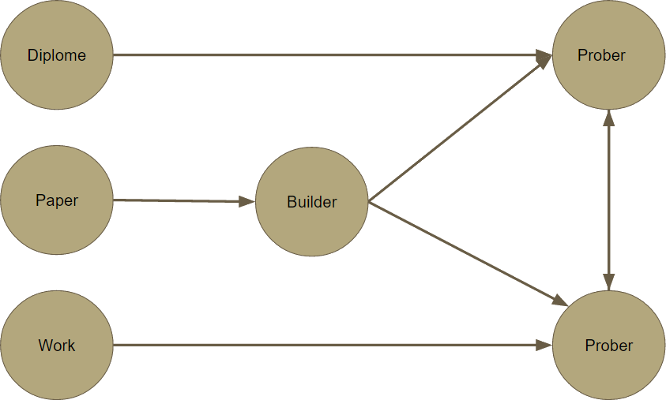
SELECT authors,work,diplome WHERE
Paper = kNN
Sliding window Integration

Sliding window Integration
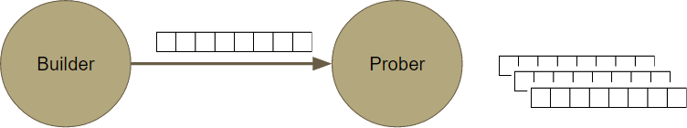Topology Parallelism
Topology Parallelism

Topology Parallelism
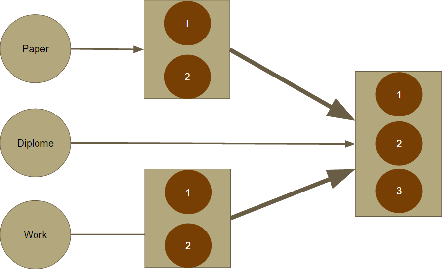Deployment
Storm Cluster
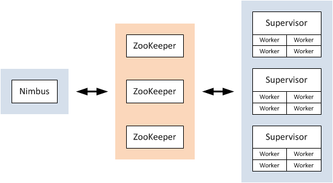Processing with Sliding Window
Sliding Window Size = Number of Generation x Generation SizeAnalysis and Results
- Fix the sliding window size and change the number of generation
- Increase the number of generations - Data transfer amount decrease
- increase the number of generations - Processing time decrease
Analysis and Results
- Fix the number of generation and change the sliding window size
- Large window size - Data transfer amount increase
- Large window size - Processing time
Data Transfered
Process Latency

Benchmarks
Lehigh University Benchmark
- Generates a virtual university with: publications, research groups, departments, students, courses, professors and lecturers
- Usefull testing data
- Sample queries

LUBM
- RDF Data Generation
- Triples Randomization
- Read RDF Data through Jena API
Used Queries

Query 3
 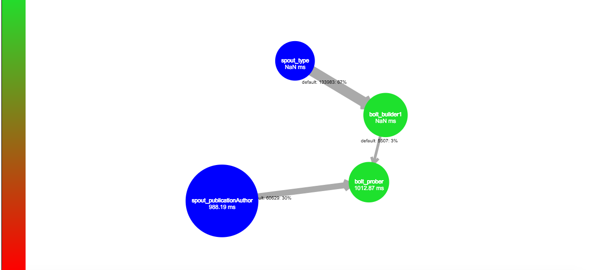
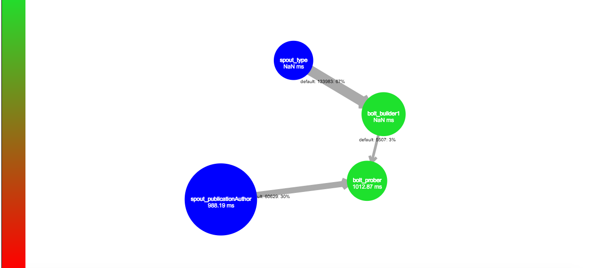
Query 4
 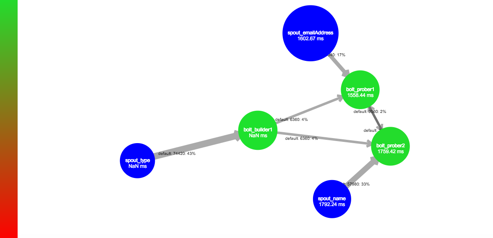
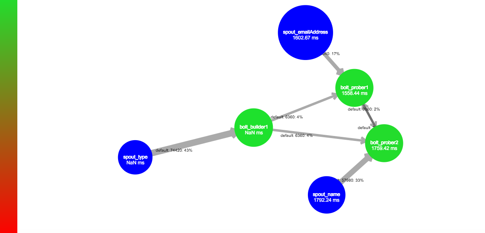
Number of Triples Executed (Filtered)
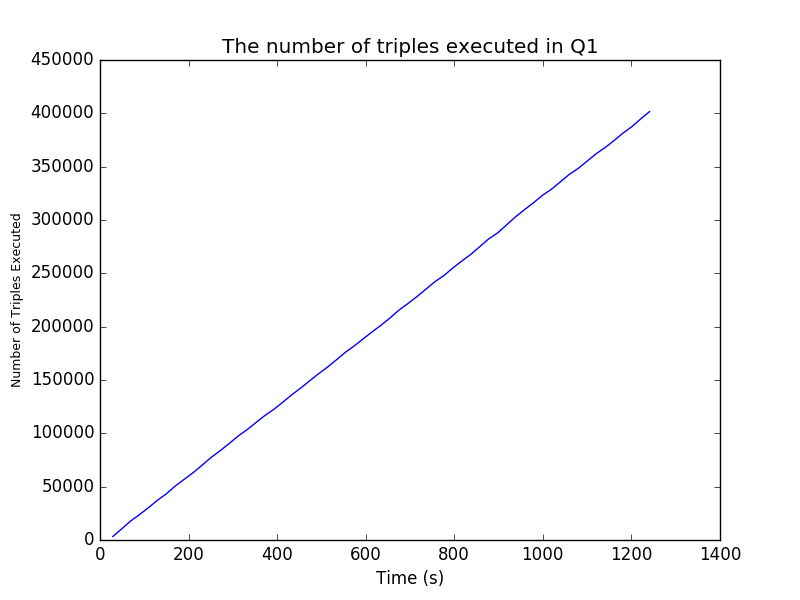
Data Transfer
Process Latency
 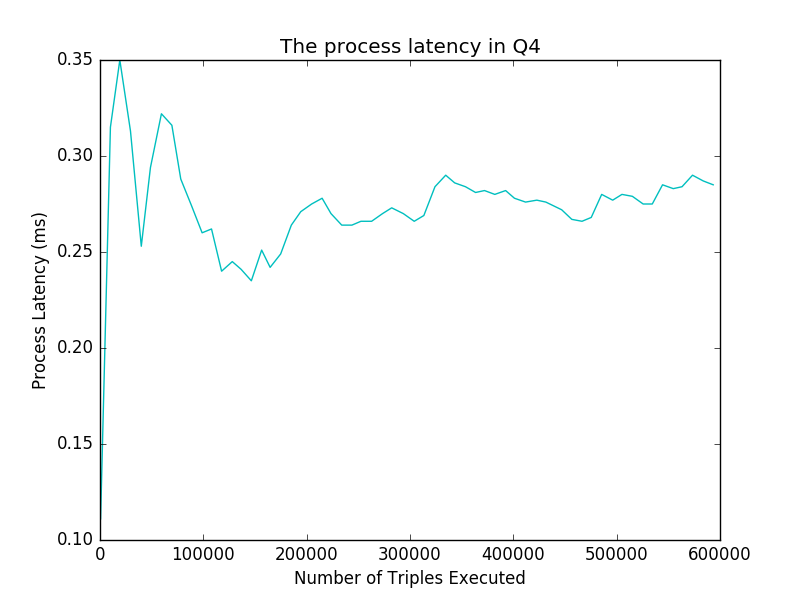
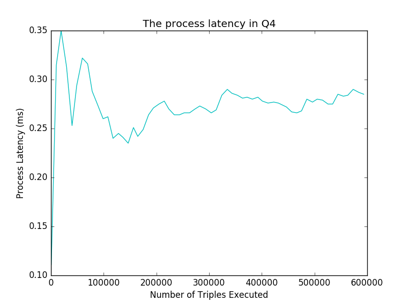